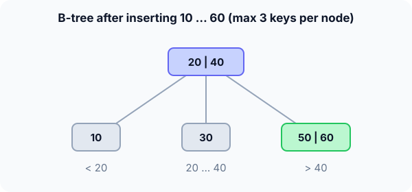

Prerequisites
- Binary search tree.
- Binary search or a scan inside a sorted array.
- Logarithms in other bases: $\log_{100} n$.
The analogy
Everyday analogy
Think of a library catalogue: a top drawer says "A–F, G–M, N–Z", each of those drawers splits further, and only a few drawers stand between you and any card.
A B-tree node is one drawer with several sorted keys and a pointer between each pair. Because every drawer splits into many, the catalogue is wide and very shallow.
How it works
Start with insertions by hand
Here each node holds at most 3 keys (a 2-3-4 tree). A full node splits: its middle key moves up into the parent. Insert 10, 20, 30, 40, 50, 60. Predict, then open "Check".
Example: predict before you read
Step 1. Insert 10, 20, 30. Predict the tree.
Check
One node holding [10 | 20 | 30], kept in sorted order. It is now full.
Step 2. Cover the next line and guess: what happens when 40 arrives?
Check
The full node splits: 20 goes up into a new root; 10 is the left child and [30 | 40] the right child. The tree grew one level at the top.
Step 3. Insert 50 and then 60. Predict the final tree.
Check
50 joins [30 | 40 | 50], which is full. When 60 arrives, it splits: 40 moves up, so the root is [20 | 40] with children [10], [30], [50 | 60].

Quick recall: Before reading further, cover the text above and say out loud: when a node splits, where does its middle key go?
Check your answer
Up into the parent. If there is no parent, it becomes a new root, so the tree grows at the top.
Finish the picture: why all leaves stay level
Look at what splitting does to the shape.
- Splitting a leaf. Predict: does it make that branch deeper than the others?
Check
No. The two halves stay at the same depth; only the parent gains a key.
- Splitting the root. Predict what happens to the depth of every leaf.
Check
Every leaf gets one level deeper at the same time, because the new root sits above them all. So all leaves are always at the same depth.
Quick recall: Without scrolling up, say out loud: searching for 50 in the final tree, which nodes do you read?
Check your answer
The root [20 | 40]; 50 > 40, so the third child [50 | 60], where 50 is found. Two nodes.
The rule in plain words
A node holds sorted keys, and between each pair of keys there is a child pointer to the values in that range. Every node except the root is at least half full.
Search: find the right range in the node, go down. Insert: add to a leaf; if it overflows, split it and push the middle key up, which may split the parent too.
Quick recall: Before you read the code, write how to search inside one B-tree node in your own words. Then check below.
Check your answer
1. Walk the node's sorted keys until you reach the first key ≥ the target. 2. If it equals the target, you're done. 3. Otherwise, if not a leaf, go down the child pointer just before that key.
The code
Read this code after you have done the insertions by hand. It will make more sense.
typedef struct BNode { int n; int key[3]; struct BNode *child[4]; int leaf; } BNode;
BNode *btree_search(BNode *x, int k) { /* returns the node holding k, or NULL */
while (x) {
int i = 0;
while (i < x->n && k > x->key[i]) i++; /* first key >= k */
if (i < x->n && k == x->key[i]) return x;
if (x->leaf) return NULL;
x = x->child[i]; /* go down between keys */
}
return NULL;
}void split_child(BNode *x, int i) { /* x->child[i] is full (3 keys) */
BNode *y = x->child[i];
BNode *z = malloc(sizeof(BNode));
z->leaf = y->leaf; z->n = 1;
z->key[0] = y->key[2]; /* right key moves to new node z */
z->child[0] = y->child[2]; z->child[1] = y->child[3];
y->n = 1; /* y keeps its left key */
for (int j = x->n; j > i; j--) { /* make room in x */
x->child[j + 1] = x->child[j]; x->key[j] = x->key[j - 1];
}
x->child[i + 1] = z;
x->key[i] = y->key[1]; /* middle key moves up */
x->n++;
}Definition
What you just did, in one line: a B-tree is a balanced search tree whose nodes hold many sorted keys and children; it stays balanced by splitting full nodes and pushing the middle key up, so all leaves are at the same depth.
graph TD
R["20 | 40"] --> A["10"]
R --> B["30"]
R --> C["50 | 60"]
How fast is it?
Quick recall: Before looking at the formula, predict: with up to 200 children per node, how many levels hold a billion keys?
Check your answer
About 4–5, because $200^4 = 1.6 \times 10^9$.
If every node (except the root) has at least $t$ children, the height of a B-tree with $n$ keys is at most:
$$h \;\le\; \log_t \frac{n + 1}{2}$$With $t = 100$ and $n = 10^9$: $\log_{100} (5 \times 10^8) \approx 4.4$, so at most 4 levels below the root. Each level is one disk read.
| Operation | Cost | Why |
|---|---|---|
| Search | $O(\log n)$, $O(\log_t n)$ disk reads | One node per level |
| Insert | $O(\log n)$ | Find a leaf, maybe split up to the root |
| Delete | $O(\log n)$ | Borrow from or merge with siblings |
| Split a node | $O(t)$ | Move about half the keys |
| Height | $O(\log_t n)$ | Every node branches $t$ ways or more |
Warning
B-tree conventions differ: some books count the maximum number of children (the order $m$), others the minimum degree $t$. A "B-tree of order 4" and "minimum degree 2" are the same 2-3-4 tree. Check the definition before answering.
Exam tip
Explain why B-trees suit disks: a disk read fetches a whole block (e.g. 4 KB), so a node is sized to one block and filled with hundreds of keys. Fewer, fatter levels mean fewer slow reads.
Common mistakes
- Splitting by moving the middle key down into a child, instead of up into the parent.
- Thinking the tree grows at the leaves; a B-tree only gets taller when the root splits.
- Forgetting that keys inside a node are kept sorted, which is what makes the range choice work.
Try it yourself
Exercise 1 (warm-up)
In the tree with root [20 | 40] and children [10], [30], [50 | 60], which child do you visit when searching for 35?
Hint
Find the range between the root's keys.
Answer
The middle child, [30], because 20 < 35 < 40. 35 isn't there, so the search ends: not found.
Exercise 2 (a bit harder)
Continue from that tree and insert 70, 80, 90 (max 3 keys per node, split when a 4th key arrives). What does the tree look like? Write your answer down before you open it.
Show answer
70 → [50 | 60 | 70]. 80 overflows it: 60 goes up, root [20 | 40 | 60], children [10], [30], [50], [70 | 80]. 90 joins [70 | 80 | 90]. The root is now full, so the next overflow there would split it and grow the tree a level.
Did you know?
Did you know?
B-trees were invented in 1970 by Bayer and McCreight at Boeing; nobody is quite sure what the "B" stands for.
Almost every relational database index (MySQL InnoDB, PostgreSQL, SQLite) and file systems such as NTFS, Btrfs and APFS use B-trees or their B+ tree variant, where all values live in the leaves.
Key points to remember
If you remember one thing from each line, remember the because.
- A B-tree is very short because every node has many children, so the height is $O(\log_t n)$.
- All leaves are at the same depth because the tree only grows when the root splits.
- Splits push the middle key up because it separates the two halves in the parent.
- It suits disks because one node fits one disk block, and each level costs one read.
- Search picks one child per node because the node's sorted keys define the ranges.
Self-check questions
Answer these in order, out loud. They follow the page, so your answers become the script of your video.
- How is a B-tree like a library catalogue with labelled drawers?
Sample answer
Each drawer covers a range and points to smaller drawers, so only a few drawers stand between you and any card; B-tree nodes hold several keys and split the range many ways.
- Walk through inserting 10, 20, 30, 40 into a B-tree with at most 3 keys per node.
Sample answer
10, 20, 30 fill one node. 40 overflows it: the middle key 20 moves up into a new root, with [10] on the left and [30 | 40] on the right.
- Why does
split_childmovey->key[1]into the parent?A good answer says what that key separates.
Sample answer
It is the middle key: everything in y's left half is smaller and everything in the new node z is bigger, so in the parent it marks exactly the boundary between y and z.
- So what is a B-tree, in one sentence?
Sample answer
A balanced search tree with many sorted keys per node that stays balanced by splitting full nodes and pushing the middle key up.
- Why are all the leaves of a B-tree at the same depth?
A good answer says where the tree grows.
Sample answer
Splits keep halves at the same level, and the tree only gets taller when the root splits, which pushes every leaf down together.
- What do search and insert cost, and how many disk reads does a search need?
Sample answer
Both are $O(\log n)$ overall, and a search reads one node per level, $O(\log_t n)$ disk reads, about 4 for a billion keys.
- Why do databases use B-trees rather than binary search trees?
Sample answer
A BST of a billion keys is about 30 levels deep, 30 disk reads. A B-tree node fills a disk block with hundreds of keys, so it needs about 4.
- If you had to teach this to a friend in 2 minutes, what would you leave out, and why?
Sample answer
I'd leave out the order-versus-degree conventions and deletion. I'd keep the catalogue analogy, the 10–40 split example, and "fat nodes, very short, one disk read per level".
External resources
- USFCA: B-tree visualization: insert keys and watch nodes split, with adjustable max degree.
- GeeksforGeeks: B-tree: definitions, search and insert.
- Wikipedia: B-tree: history, variants and database use.
Videos
- YouTube search: B-tree insertion and splitting: pick a walkthrough.